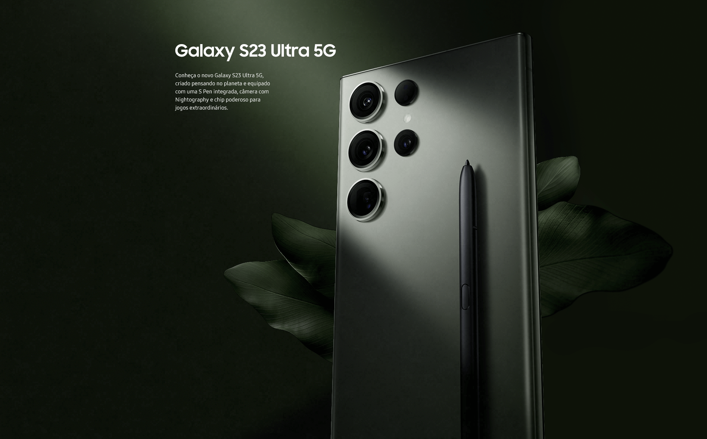

Counter-Strike: Global Offensive (CS:GO) é um jogo de tiro em primeira pessoa multiplayer competitivo, lançado em 2012 pela Valve.
Os jogadores escolhem entre duas equipes: Terroristas ou Contra-Terroristas, cada uma com objetivos específicos.
Com gráficos realistas e jogabilidade estratégica, CS:GO se tornou um dos jogos de esportes eletrônicos mais populares do mundo, com competições profissionais e milhões de jogadores ativos diariamente.
Samsung S23 Ultra 5G

O Samsung S23 Ultra 5G é um smartphone topo de linha com tela AMOLED de 6,8 polegadas, câmera principal de 108MP e zoom óptico de 10x.
Possui processador Exynos 2200, 12GB de RAM e bateria de 5000mAh com carregamento rápido de 45W.
Suporta conectividade 5G e tem armazenamento interno de até 512GB.
O dispositivo conta com recursos avançados, como sensor de impressão digital sob a tela, reconhecimento facial e resistência à água e poeira.
Streaming de Jogos
Streaming de games é a transmissão ao vivo de jogos por meio da internet, permitindo que os espectadores assistam a jogabilidade de outros jogadores em tempo real.
Com plataformas populares como Twitch e YouTube Gaming, os jogadores podem compartilhar seus jogos, interagir com a comunidade e ganhar dinheiro com doações e patrocínios.
Streaming de games tornou-se um fenômeno cultural, criando celebridades na comunidade de jogos e inspirando novos jogadores a entrar no mundo dos games.